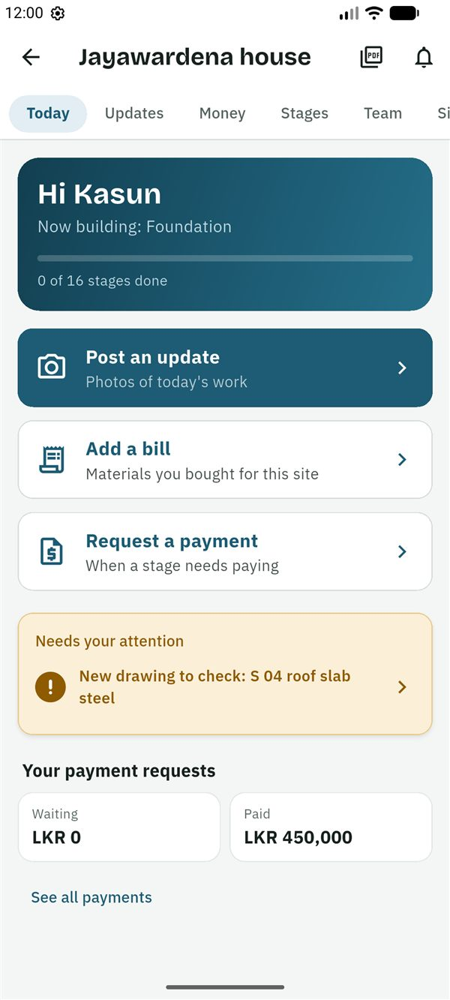
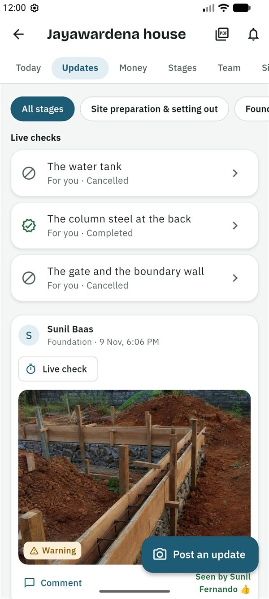
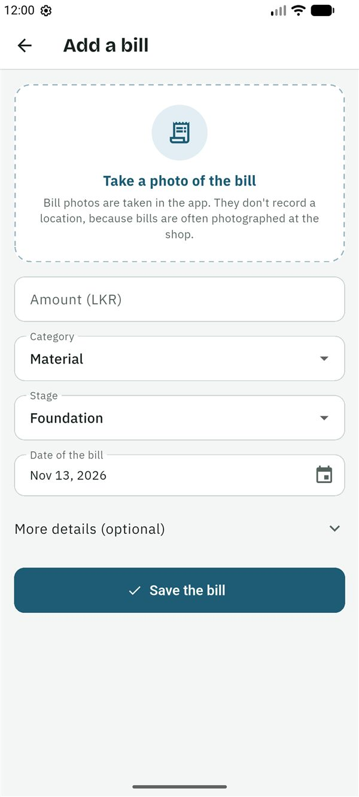
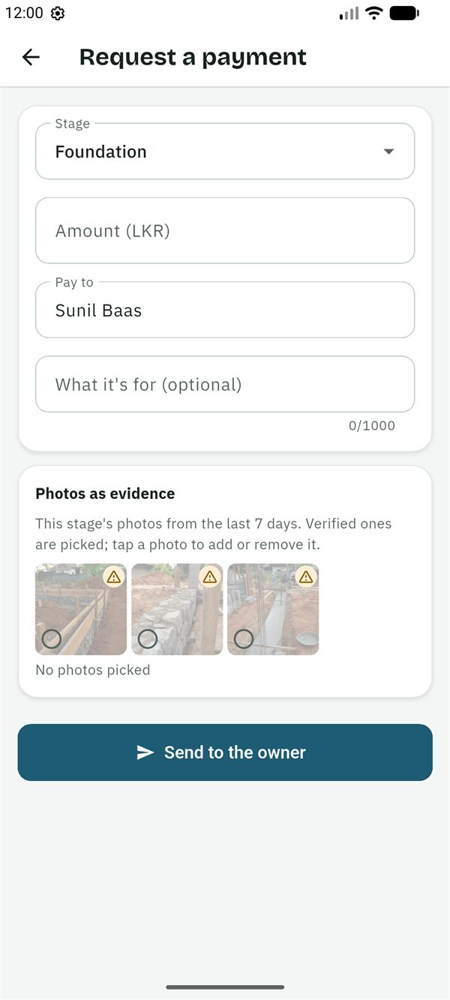
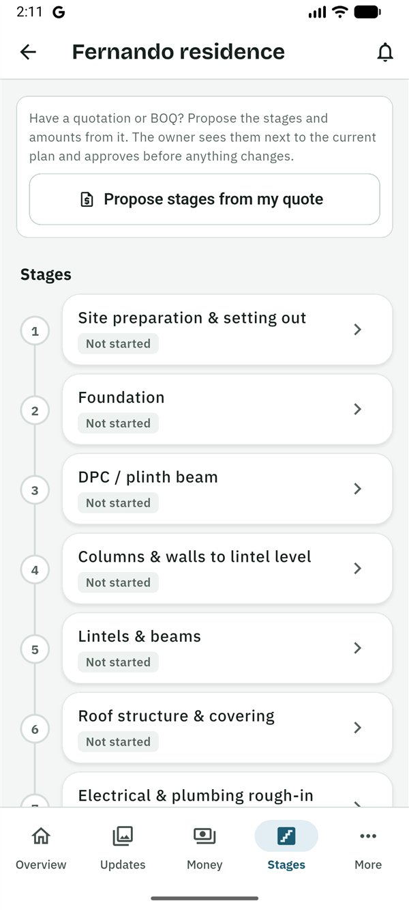

Guides › Contractor
Guide for contractors
සිංහලෙන් කියවන්න (Read in Sinhala)
This guide is for the contractor (baas) building the house. You post photos of the work, add the bills for what you buy, and ask the owner for payments with photos as evidence. You don't see the owner's budget. SiteProof is free for you.
What you can and can't do
You can
- Post updates with photos and a voice note.
- Add the bills for what you buy for the site, and see your own bills.
- Ask for payments, and see your own payment requests.
- See the payment schedule from the contract, and the contract itself in Files.
- Propose the stages and amounts from your quotation or BOQ.
- Record a change to the work for the owner to decide (Plus).
- Start and finish stages, and fix what a stage check found.
- Confirm you have seen a new drawing.
- Set the site location, when you are the only one on site.
- Comment on updates, bills, payments and drawings.
You can't
- See the owner's budget, or other people's bills and payment requests.
- Approve a payment or mark your own payment paid: the owner decides, and the owner or the family member on site marks it paid.
- Invite or remove people, or edit the project, its stages and budgets (you propose stages instead).
- Add drawings and documents.
- Check or sign off your own stages, or ask for a live check.
Getting started
- The owner invites you. You get a message, usually on WhatsApp, in Sinhala and English, with a 6-character code. The code works once, for 7 days.
- Install SiteProof from Google Play. While SiteProof is being tested, only invited testers can install it. It is for Android phones for now.
- Choose සිංහල or English, then read the short welcome or tap Skip.
- Sign in: type your email address and tap Send code, then type the 6-digit code from the email and tap Verify. Or tap Continue with Google. There is no password.
- Under About you, fill in Your name and the Country you live in, then tap Continue.
- On the home screen, tap ⋮ → Join with a code. Type the code and tap Check the code. The app shows who invited you, as Contractor. Tap Join this project.
Your projects are on the home screen with a Contractor chip, under Your work if you also have projects in other roles. Projects with something waiting for you come first, and each card shows the next agreed payment by name. A project opens on Today.
The Today screen
Today says what is being built (Now building: …) and has three big buttons: Post an update, Add a bill (materials you bought for this site) and Request a payment. Below are any live checks for you, Needs your attention (a new drawing to check, things to fix, the owner's questions) and Your payment requests, with what is waiting and what is paid.

Post an update
- On Today, tap Post an update.
- Tap Take photos. The camera shows the stage's last photo faintly over the view: line up with it, so the owner can compare from the same spot. Hide turns it off. Take up to 10 photos, then tap Done.
- Check the Stage.
- If you like, write What was done? (optional), or tap Record a voice note and say what the photos show (up to 2 minutes).
- Tap Post. Without signal, it waits on the phone and uploads by itself later.
Photos can only be taken in the app, not picked from the gallery. Each gets a badge for the owner; see Good to know. Regular photos of the stage are what the owner looks at before paying.

Add your bills
- On Today, tap Add a bill.
- Tap Take a photo of the bill (optional; it records no location, because bills are often photographed at the shop).
- Tap Fill in from the photo to let AI fill in the empty fields, then check each one against the bill.
- Fill in the Amount (LKR), the Category, the Stage and the Date of the bill. Under More details (optional), add the item, quantity, unit and shop.
- Tap Save the bill.
Your bills are listed on Money under Your bills. The owner sees them, but they are not counted again in the budget: you are paid back for them through your payment requests. You can delete your own bill within 24 hours, unless the owner has asked about it.

Request a payment
- First post an update with photos of the work on that stage.
- On Today, tap Request a payment.
- If the owner has set a payment schedule from the contract, For suggests the next agreed payment and fills in its stage and what is left of it. Choose another one, or Not in the schedule.
- Check the Stage and the Amount (LKR), and fill in Pay to and, if you like, What it's for (optional).
- Under Photos as evidence, the stage's photos from the last 7 days are shown, with the verified ones picked. Tap a photo to add or remove it.
- Tap Send to the owner.
The owner sees your request next to the agreed payment and the photos, and chooses Approve, Ask a question or Reject (with a reason). You are told straight away. If the owner asks a question, answer in the request's comments. You can Cancel this request while it waits. Once paid, you can see the bank slip.

On Money you also see the Payment schedule: what has been paid of the contract and where each agreed payment stands (Paid, Approved, Asked for, part paid, Not yet).
Propose stages from your quote
Have a quotation or BOQ? Propose the stages and amounts from it. The owner sees them next to the current plan and approves before anything changes.
- Open Stages and tap Propose stages from my quote.
- The proposal starts from the current stages. Tap a stage to rename it or change its amount; add, remove, or hold and drag to change the order. Every stage needs an amount (0 is fine).
- If the quotation is in Files, pick it under Quotation or BOQ in Files (optional), and add a Note for the owner (optional).
- Tap Send to the owner.
You have one open proposal at a time: sending again replaces it, and Withdraw my proposal takes it back. If the owner asks a question, change the proposal or add a note and send it again (Update my proposal). Stages that already have photos, bills or payments stay; you can rename them.

Record a change to the work (Plus)
When the work changes from what was agreed (a wider lintel, better tiles, rock under the foundation), record it before the money and the plan change:
- Open Money → Changes to the work → Record a change.
- Fill in What changes and, if you like, Why, and what was agreed (optional).
- Choose the stage, Costs more or Saves money, the amount (leave it empty if it costs nothing) and the Extra days of work.
- Pick the Photos that show it and tap Save the change.
The owner approves it, declines it or asks a question. Once approved, the budget and the plan follow; with a payment schedule, it becomes one more agreed payment you can ask for. You can Withdraw it while it waits.
Drawings, live checks, fixes and stages
- A new drawing: when "New drawing to check: …" shows in Needs your attention, open Files, look at the drawing and tap Seen, I'll build from this. A new version asks again, so nobody builds from an old one.
- A live check: the owner may ask for new photos now. Open it from Today, tap Take the photos, and post before the time shown, where there is signal. If it shows a Code to write on paper, show the 4 digits on paper in one of the photos.
- Things to fix: when a stage check lists something to fix, open the stage and, once it is done, tap Mark fixed and take photos of the fix. When all are fixed, the checker is asked to look again.
- Stages: open Stages, tap the stage, then Start this stage or Mark this stage as finished.
- The site location: only when the owner chose Only the contractor for who is on site. Stand in the middle of the plot, open Site and tap I'm at the house site now, then Save. The owner confirms it.
Set up a project for a client
You can start a project for a client and invite them; they become its owner and the one who pays.
- On the home screen, tap New project. Under Who is this project for?, choose A client's house: I'm their contractor.
- Fill in the project and tap Create project. Until your client joins, you can set up everything an owner does: the stages, the budget, the documents and the payment schedule.
- On the Overview, under Waiting for your client, tap Invite your client and send the message on WhatsApp. The code works for 60 days.
When the client joins, they own the project and you stay on as its contractor. From then on you no longer see the budget, like any contractor. A project nobody takes over within 60 days is archived. It doesn't count against your own Free plan while it waits.
Good to know
Who sees what
- You see your own bills and payment requests, never the owner's budget or other people's bills.
- The owner sees your bills (not counted again in the budget), your requests and your photos with their badges.
- The owner's check on each payment request ("Before you decide") and the weekly summary are for the owners only.
- Everyone in the team sees the photos, the site location, the stages, stage checks, comments and documents.
- People in the project see your name and role, and your phone number if you signed in with one.
The photo badges
- Verified on site: taken in the app inside the site's circle (usually 150 m) and uploaded soon after.
- Warning: something couldn't be fully checked, for example the site location isn't confirmed yet, the GPS was weak, the photo was taken a little outside the circle, or it looks the same as an earlier photo of this house.
- Flagged: taken far from the site, with a simulated location, or the same photo posted twice.
Nobody can change a photo's badge. If a photo has a warning, take a new one in the app, on site. When only the contractor is on site, the owner sees a reminder to ask for a new photo before a large payment.
Plans
SiteProof is free for you: only the owner pays. While SiteProof is being tested, every project has Plus free. Features marked (Plus) need the owner's Plus plan once plans start; on Free, bills and payment requests need Plus too.